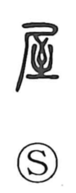

屋

Kun: ya | On: oku
house ・ building ・ shop
Explanation
A compound of shi 尸 and shi 至. Here 尸 is taken as the outline of a roof, while 至 depicts an inverted arrow and the spot where a shot arrow comes to rest. In ancient practice, the site for a temporary mortuary house was chosen by divination with sacred arrows—the place where the arrow fell marked the ground to build on. Thus 屋 originally referred to a board-walled shelter where a coffin was set out before the actual burial in a "double funeral" custom; from this it broadened to mean a house or residence, and by extension a shop.